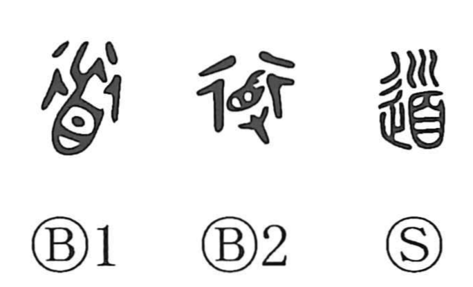

Explanation
A compound graph of 首 ‘head’ and 辵 ‘to go.’ Bronze forms add 又 ‘hand,’ making explicit the act of advancing while holding a head. In ancient rite, the head of an enemy was believed to carry potent curse power that could drive off harmful spirits clinging to foreign soil; one moved forward bearing it to exorcize and purify the route. The related 導 combines head, movement, and hand (又/寸) and names the guiding advance that performs this purification, while 道 denotes the stretch thus cleared and sanctified as a usable way. Kindred graphs echo the same ritual logic: 除 shows a handled needle (余) thrust into the ground to expel spirits below, and 途 marks a path purified in that fashion. Over time, 道 broadened from a ritually cleansed roadway to the rational order or method of things (道理), and in Japan it came to mean the disciplined arts (華道, 茶道). In classical usage it can also mean ‘to speak.’